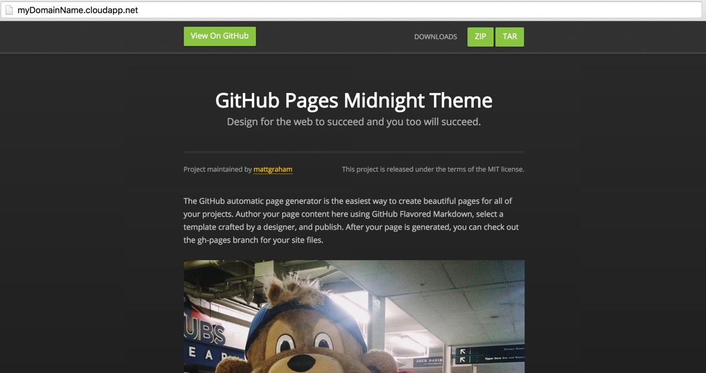
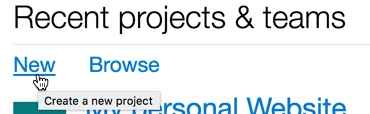
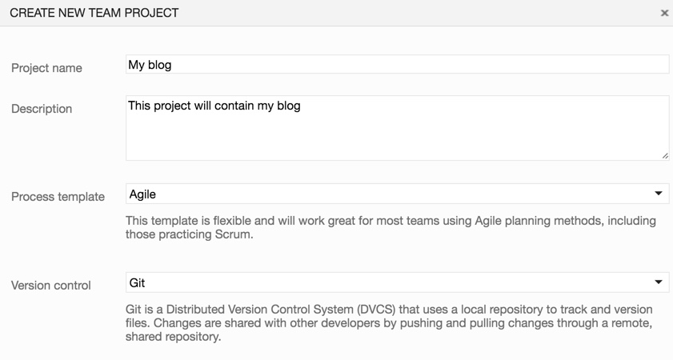
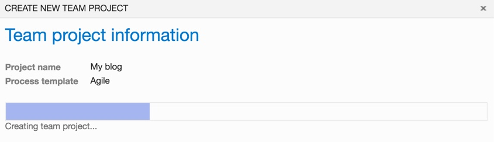
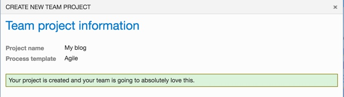
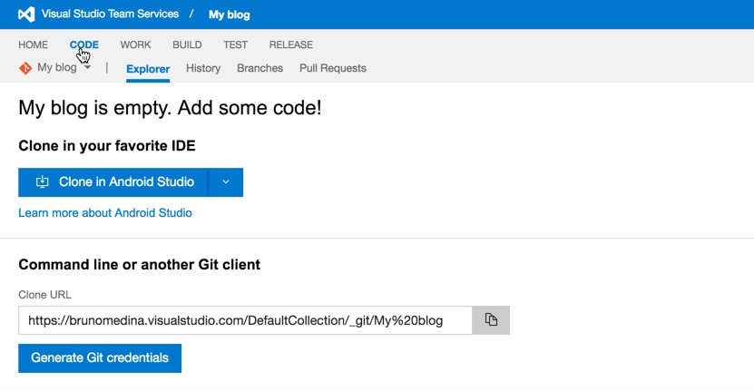
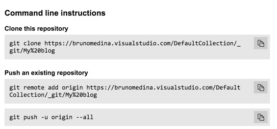

First of all make sure you followed my previous post on how to create a VM for Docker on Azure. Jekyll is really simple to use, and what its even better is that there are plenty of themes that can be used right out of the box. I suggest you go to http://jekyllthemes.org/ and select the one that you like the most.
Install your favorite theme
For this post I will be using midninght theme
If you closed your terminal or you want to start fresh, lets ssh into our VM.
ssh myUserName@myDomainName.cloudapp.net
We need to download the version of theme, you can either download the master static file or you can clone the git repo.
For my example I will be downloading the master zip file into a folder named blog.
mkdir ~/blog
cd ~/blog
wget https://github.com/mattgraham/midnight/zipball/master
Let’s install unzip in our server and unzip the master file:
sudo apt-get install unzip
unzip master
cd mattgraham-midnight-847e586/
Since we are using Docker the easiest part is to configure the server because we already have the docker image provided here The only thing we need to do, as suggested in the repo, is to run the following command on our terminal:
docker run --rm --label=jekyll --volume=$(pwd):/srv/jekyll -it -p 80:80 jekyll/jekyll
We should get a response like this:
Unable to find image 'jekyll/jekyll:latest' locally
latest: Pulling from jekyll/jekyll
a3ed95caeb02: Pull complete
0ff94817e82d: Pull complete
bf0787ba2884: Pull complete
5a53b5636565: Pull complete
Digest: sha256:3506f9e96ba394d8eaf95876e8e99746e86e6fea46cd596bfaad05060366f849
Status: Downloaded newer image for jekyll/jekyll:latest
Configuration file: none
Source: /srv/jekyll
Destination: /srv/jekyll/_site
Incremental build: disabled. Enable with --incremental
Generating...
done in 0.018 seconds.
Auto-regeneration: enabled for '/srv/jekyll'
Configuration file: none
Server address: http://0.0.0.0:4000/
Server running... press ctrl-c to stop.
Now, since we have already set up a rule that allows us to see our VM from the port 80, we can simply navigate though our browser to our VM’s URL. Which in my case is the following one http://myDomainName.cloudapp.net

IT WORKS! That means that you have officially set up correctly your first Jekyll website on a Docker Container in Microsoft Azure :)
Also, If you are having trouble with your ports, we can verify that the server is up and running by simply openning a new SSH connection to our server and run the following command:
curl http://127.0.0.1:80/
This will print the contents of our current Jekyll website. If you can actually see this, that implies that your docker installation is correct, but you haven’t set up the proper TCP rules in the VM configuration.
<!doctype html>
<html>
<head>
<meta charset="utf-8">
<meta http-equiv="X-UA-Compatible" content="chrome=1">
<title>Midnight by mattgraham</title>
<link rel="stylesheet" href="stylesheets/styles.css">
<link rel="stylesheet" href="stylesheets/pygment_trac.css">
<script src="https://ajax.googleapis.com/ajax/libs/jquery/1.7.1/jquery.min.js"></script>
<script src="javascripts/respond.js"></script>
<!--[if lt IE 9]>
<script src="//html5shiv.googlecode.com/svn/trunk/html5.js"></script>
<![endif]-->
<!--[if lt IE 8]>
<link rel="stylesheet" href="stylesheets/ie.css">
<![endif]-->
<meta name="viewport" content="width=device-width, initial-scale=1, user-scalable=no">
</head>
<body>
<div id="header">
<div class="wrapper">
<a href="https://github.com/mattgraham/midnight" class="btn">View On GitHub</a>
<ul class="nav">
...
Let’s customize it and set it up
When you are doing your custom webpage you usually don’t want to host it in an open repo. Luckily for us, Visual Studio Team Services offers you free git repositories.
Let’s create a VSTS project and hook it up to our server.
1. Go to Visual Studio Team Services and click ‘Get Started for Free’

-
Log in to your Microsoft Account and in the landing page click on “New” to create a new project.

-
Give a name to your project and select the process template you prefer and Git as Version control. 
- Click on create and let VSTS do its magic.  
- Now lets set up the git repo, so in the project just click on the ‘CODE’ tab  
- With the project up and running in Visual Studio Team Services we can now clone the repo and start working on it. Open a terminal in your personal computer (not an SSH terminal to the server) and go to your favorite location to clone the code.
git clone https://brunomedina.visualstudio.com/DefaultCollection/_git/My%20blog
Make sure you use the url from your project.
- After you have cloned your own repo, you can download a theme and work on it. In my case I have chosen this repo, so I will go ahead and use my theme and update it.
- Now that you have a web page that is working we can make a hook to update the live site
jekyll serve --detach